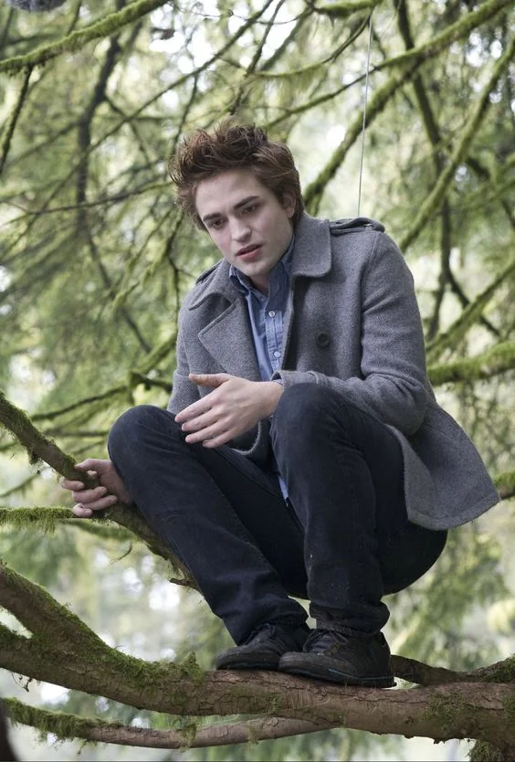

A saga Crepúsculo conta a história de Bella Swan, uma adolescente que se muda para a cidade de Forks e se apaixona por Edward Cullen, um vampiro que vive com sua família sem se alimentar de sangue humano. Apesar dos perigos, eles iniciam um relacionamento intenso, enfrentando ameaças de outros vampiros e a desaprovação de lobisomens, como Jacob Black, amigo de Bella que também se apaixona por ela. O triângulo amoroso se intensifica enquanto Bella é forçada a escolher entre os dois mundos.
Ao longo da história, Bella opta por Edward, se casa com ele e engravida de uma criança híbrida, Renesmee. A gravidez coloca sua vida em risco, mas ela é transformada em vampira após o parto. A existência da criança atrai a atenção dos Volturi, líderes do mundo vampírico, que acreditam que Renesmee é uma ameaça. Um grande confronto é evitado quando se prova que a menina é inofensiva. A saga termina com Bella, Edward e Renesmee vivendo em paz, depois de superarem todos os desafios.

O trio Principal

Robert Pattinson
Robert Douglas Thomas Pattinson é um ator, modelo e músico britânico. Conhecido por estrelar tanto filmes de grande orçamento quanto os independentes, Pattinson está entre os atores mais bem pagos do mundo na atualidade. Fazendo seu sapel em Twilight como Edward Cullen.